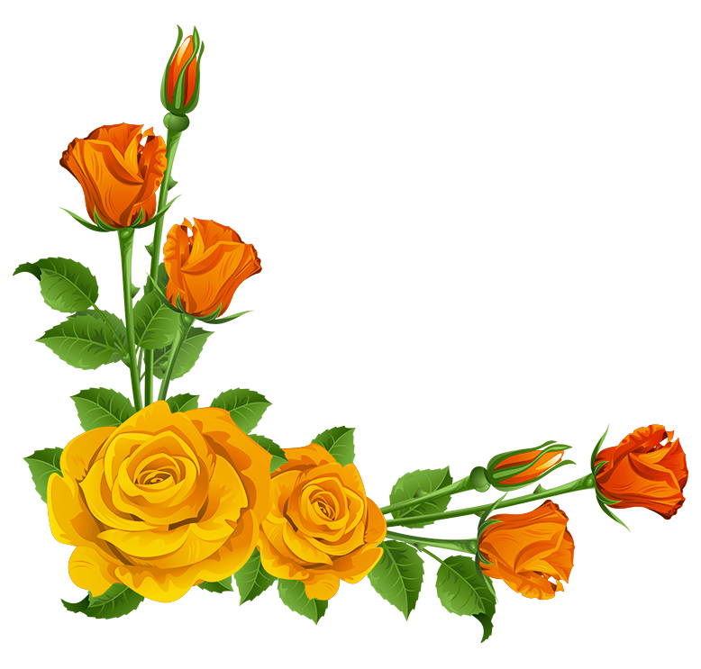
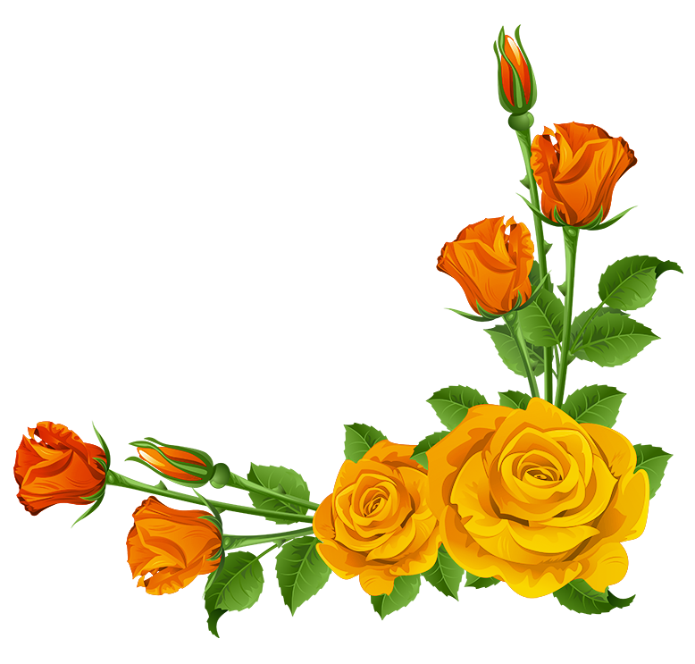

Learn more at Endometriosis Association.org.
I'm Marissa Swing, a dedicated advocate for women's health, and I'm creating this website to share information about endometriosis. Through my platform, I aim to raise awareness about this often misunderstood condition and provide valuable resources and support for those who are affected by it. As someone who has personally experienced the challenges of endometriosis, I understand the importance of accessible and accurate information. My website will offer educational content, personal stories, and expert advice to help others navigate their journey. I'm committed to fostering a supportive community where individuals can share their experiences and find the help they need.
 